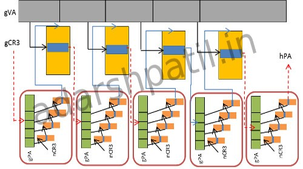
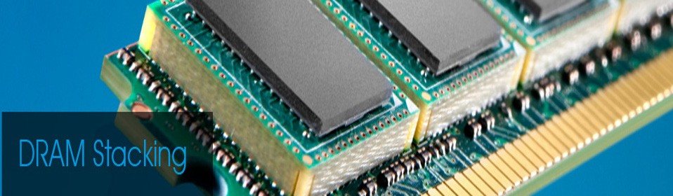
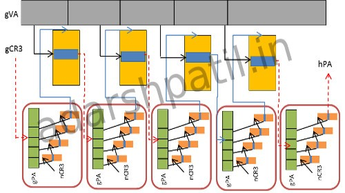
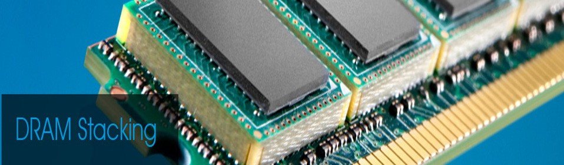

← Back to Projects
 



HAShCache: Heterogeneity Aware Shared DRAMCache for Integrated Heterogeneous Systems
EECS 2017 Poster (Best Poster Award)
ACM TACO paper
HiPEAC 2018 slides
Source on Github
Integrated Heterogeneous System (IHS) processors pack throughput oriented GPGPUs alongside latency oriented CPUs on the same die sharing certain resources, e.g., shared last level cache, network-on-chip (NoC), and the main memory. The demands for memory accesses and other shared resources from GPU cores can exceed that of CPU cores by 2 to 3 orders of magnitude. This disparity poses significant problems in exploiting the full potential of these architectures.
In this paper, we propose adding a large capacity stacked DRAM, used as a shared last level cache, for the IHS processors. However, adding the DRAMCache naively, leaves significant performance on the table due to the disparate demands from CPU and GPU cores for DRAMCache and memory accesses. In particular, the imbalance can significantly reduce the performance benefits that the CPU cores would have otherwise enjoyed with the introduction of the DRAMCache, necessitating a heterogeneity aware management of this shared resource for improved performance.
In this paper, we propose three simple techniques to enhance the performance of CPU application while ensuring very little to no performance impact to the GPU. Specifically, we propose (i) PrIS, a prioritization scheme for scheduling CPU requests at the DRAMCache controller (ii) ByE, a selective and temporal bypass- ing scheme for CPU requests at the DRAMCache (iii) Chaining, an occupancy controlling mechanism for GPU lines in the DRAMCache through pseudo-associativity. The resulting cache, HAShCache, is heterogeneity- aware and can adapt dynamically to address the inherent disparity of demands in an IHS architecture. Exper- imental evaluation of the proposed HAShCache results in an average system performance improvement of 41% over a naive DRAMCache and over 200% improvement over a baseline system with no stacked DRAMCache
- Computer Architecure
- x86 Address Translation
- TLB, pagewalk
- 3D Die Stacked DRAMCache
- gem5-gpu, gem5, gpgpu-sim
- Research Paper
- ACM TACO